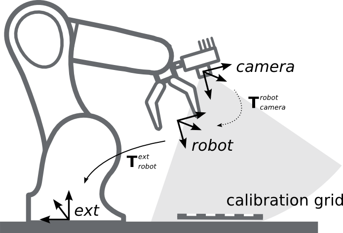
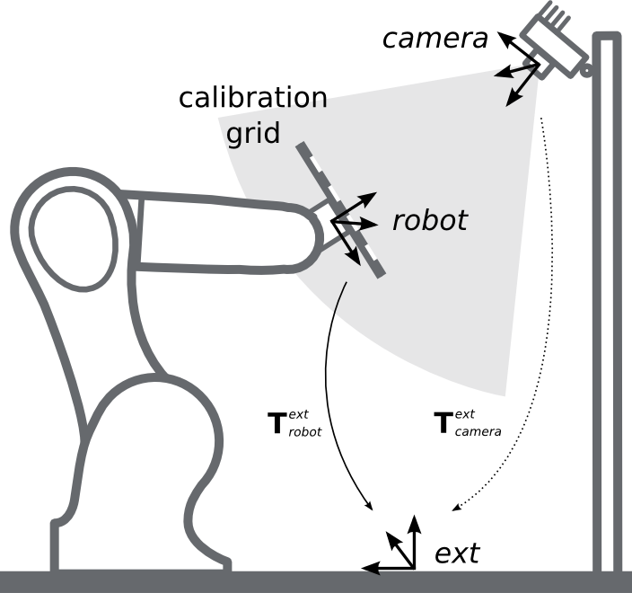
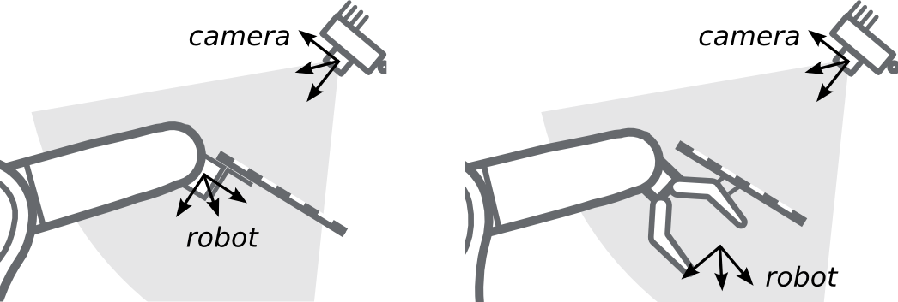
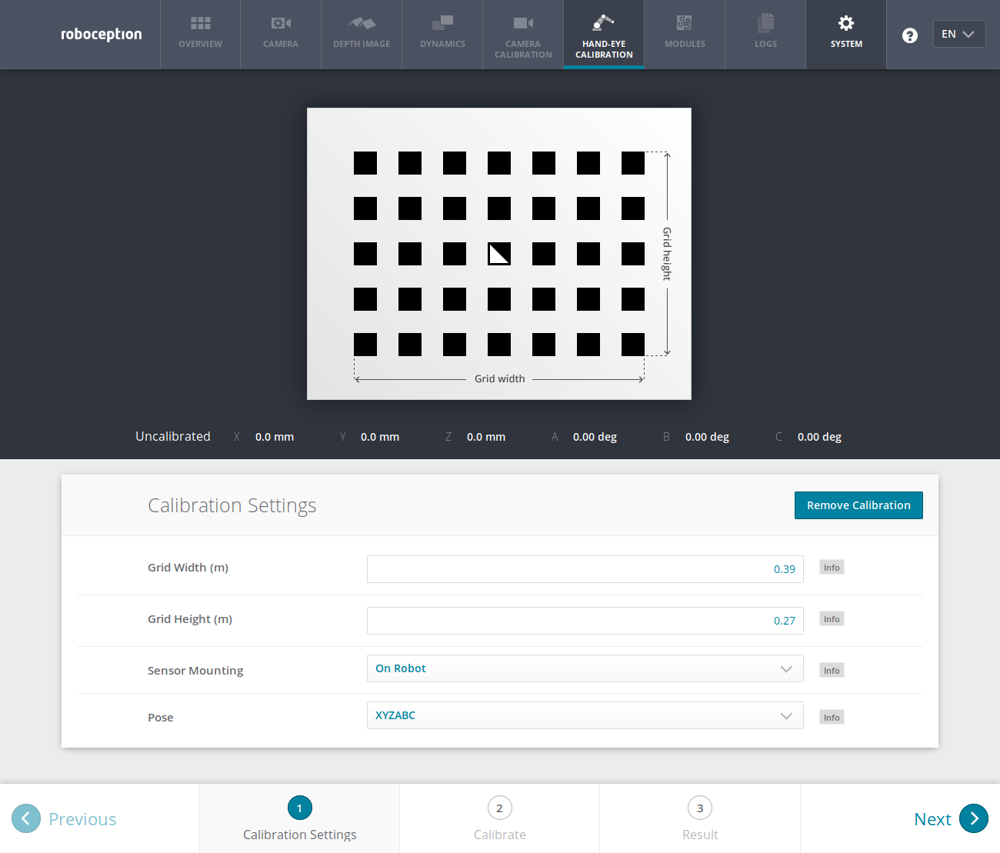
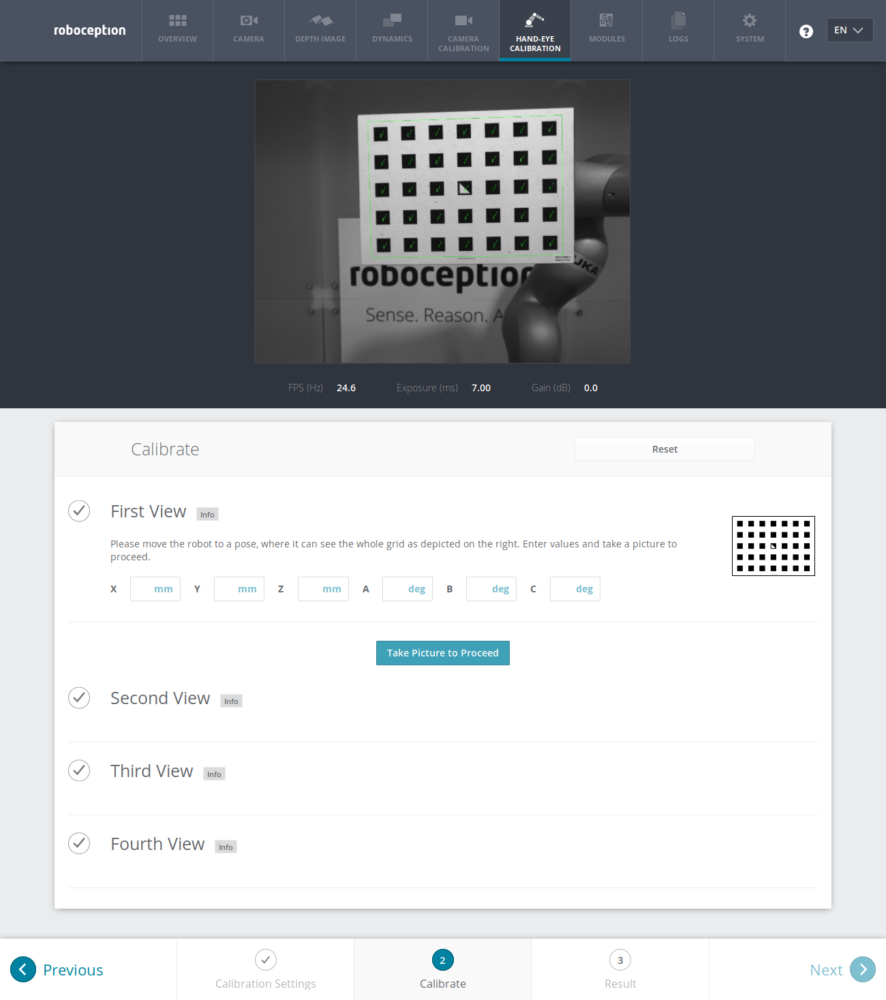
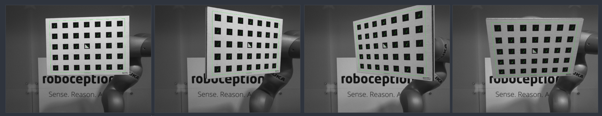
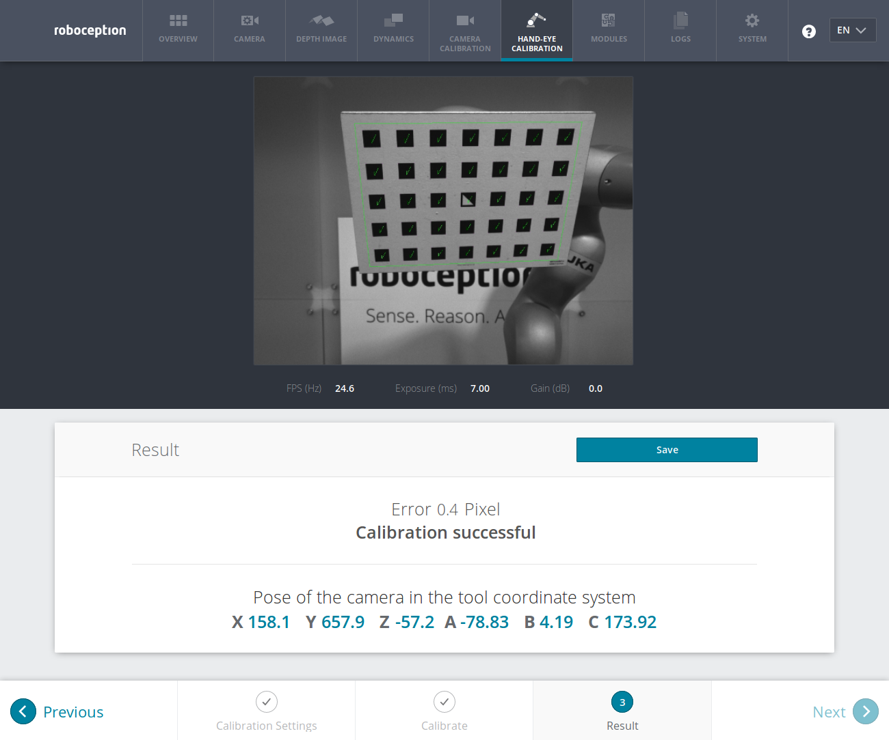

Hand-eye calibration¶
For applications, in which the rc_visard is integrated into one or more robot systems, it needs to be calibrated w.r.t. some robot reference frames. For this purpose, the rc_visard is shipped with an on-board calibration routine called the hand-eye calibration component.
Note
The implemented calibration routine is completely agnostic about the user-defined robot frame to which the rc_visard is calibrated. It might be a robot’s end-effector (e.g., flange or tool center point) or any point on the robot structure. The method’s only requirement is that the pose (i.e., translation and rotation) of this robot frame w.r.t. a user-defined external reference frame (e.g., world or robot mounting point) is exactly observable by the robot controller and can be reported to the calibration component.
The Calibration routine itself is an easy-to-use three-step procedure using a calibration grid. Calibration grids for the rc_visard can be obtained from Roboception.
Calibration interfaces¶
The following two interfaces are offered to conduct hand-eye calibration:
All services and parameters of this component required to conduct the hand-eye calibration programmatically are exposed by the rc_visard’s REST-API interface. The respective node name of this component is
rc_hand_eye_calibrationand the respective service calls are documented Services.Note
The described approach requires a network connection between the rc_visard and the robot controller to pass robot poses from the controller to the sensor’s calibration component.
For use cases where robot poses cannot be passed programmatically to the rc_visard’s hand-eye calibration component, the Web GUI’s Hand-Eye Calibration tab offers a guided process to conduct the calibration routine manually.
Note
During the process, the described approach requires the user to manually enter into the Web GUI robot poses, which need to be accessed from the respective robot-teaching device or handheld.
Sensor mounting¶
As illustrated in Fig. 33 and Fig. 34, two different use cases w.r.t. to the mounting of the rc_visard generally have to be considered:
- The rc_visard is mounted on the robot, i.e., it is mechanically connected at its mounting points) to a robot link (e.g., at its flange or a flange-mounted tool), and hence moves with the robot.
- The rc_visard is not mounted on the robot but is fixed to a table or other place in the robot’s vicinity and remains at a static position w.r.t. the robot.
While the general Calibration routine is very similar in both use cases, the calibration process’s output, i.e., the resulting calibration transform, will be semantically different, and the fixture of the calibration grid will also differ.
- Calibration with a robot-mounted sensor
When calibrating a robot-mounted rc_visard with the robot, the calibration grid has to be secured in a static position w.r.t. the robot, e.g., on a table or some other fixed-base coordinate system as sketched in Fig. 33.
Warning
It is extremely important that the calibration grid does not move during step 2 of the Calibration routine. Securely fixing its position to prevent unintended movements such as those caused by vibrations, moving cables, or the like is therefore strongly recommended.
The result of the calibration (step 3 of the Calibration routine) is a pose \(\mathbf{T}^{\text{robot}}_{\text{camera}}\) describing the (previoulsy unknown) relative positional and rotational transformation between the rc_visard’s camera frame and the user-selected robot frame such that
(1)¶\[\mathbf{p}_{\text{robot}} = \mathbf{R} \left(\mathbf{T}^{\text{robot}}_{\text{camera}}\right) \cdot \mathbf{p}_{\text{camera}} + \mathbf{t} \left(\mathbf{T}^{\text{robot}}_{\text{camera}}\right) \:,\]where \(\mathbf{p}_{\text{robot}} = (x,y,z)^T\) is a 3D-point with its coordinates expressed in the robot frame, \(\mathbf{p}_{\text{camera}}\) is the same point represented in the camera coordinate frame, and \(\mathbf{R}(\mathbf{T})\) as well as \(\mathbf{t}(\mathbf{T})\) are the corresponding \(3\times 3\) rotation matrix and \(3\times 1\) translation vector to a pose \(\mathbf{T}\), respectively.
Fig. 33 Important frames and transformations for calibrating a robot-mounted rc_visard: The sensor is mounted with a fixed relative position to a user-defined robot frame (e.g., flange or TCP). It is important that the pose \(\mathbf{T}^{\text{ext}}_{\text{robot}}\) of this robot frame w.r.t. a user-defined external reference frame ext is observable during the calibration routine. The result of the calibration process is the desired calibration transformation \(\mathbf{T}^{\text{robot}}_{\text{camera}}\), i.e., the pose of the camera frame within the user-defined robot frame.
- Calibration with a statically-mounted sensor
In use cases where the rc_visard is positioned statically w.r.t. the robot, the calibration grid needs to be mounted to the robot as shown for example in Fig. 34 and Fig. 35.
Note
The hand-eye calibration component is completely agnostic about the exact mounting and positioning of the calibration grid w.r.t. the user-defined robot frame. That is, the relative positioning of the calibration grid to that frame neither needs to be known, nor it is relevant for the calibration routine, as shown in Fig. 35.
Warning
It is extremely important that the calibration grid is attached securely to the robot such that it does not change its relative position w.r.t. the user-defined robot frame during step 2 of the Calibration routine.
Securely preventing unintended position changes such as those caused by vibrations, for example by mounting the calibration grid itself on a wooden support (suggested thickness min. 1 cm), which can then be screwed to the robot structure, e.g., its flange or tool, is therefore strongly recommended.
In this use case, the result of the calibration (step 3 of the Calibration routine) is the pose \(\mathbf{T}^{\text{ext}}_{\text{camera}}\) describing the (previoulsy unknown) relative positional and rotational transformation between the rc_visard’s camera frame and the user-selected external reference frame ext such that
(2)¶\[\mathbf{p}_{\text{ext}} = \mathbf{R} \left(\mathbf{T}^{\text{ext}}_{\text{camera}}\right) \cdot \mathbf{p}_{\text{camera}} + \mathbf{t} \left(\mathbf{T}^{\text{ext}}_{\text{camera}}\right) \:,\]where \(\mathbf{p}_{\text{ext}} = (x,y,z)^T\) is a 3D point with its coordinates expressed in the external reference frame ext, \(\mathbf{p}_{\text{camera}}\) is the same point represented in the camera coordinate frame, and \(\mathbf{R}(\mathbf{T})\) as well as \(\mathbf{t}(\mathbf{T})\) are the corresponding \(3\times 3\) rotation matrix and \(3\times 1\) translation vector to a pose \(\mathbf{T}\), respectively.
Fig. 34 Important frames and transformations for calibrating a statically mounted rc_visard: The sensor is mounted with a fixed position relative to a user-defined external reference frame ext (e.g., the world coordinate frame or the robot’s mounting point). It is important that the pose \(\mathbf{T}^{\text{ext}}_{\text{robot}}\) of the user-defined robot frame w.r.t. this frame is observable during the calibration routine. The result of the calibration process is the desired calibration transformation \(\mathbf{T}^{\text{ext}}_{\text{camera}}\), i.e., the pose of the camera frame in the user-defined external reference frame ext.
Fig. 35 Alternate mounting options for attaching the calibration grid to the robot
{kind=link}
{kind=link}
{kind=link}
Calibration routine¶
The general hand-eye calibration routine consists of three steps, which are illustrated in Fig. 36. These three steps are also represented in the Web GUI’s guided hand-eye-calibration process.
{kind=link}
Fig. 36 Illustration of the three different steps involved in the hand-eye calibration routine
Step 1: Setting parameters¶
Before starting the actual calibration routine, the grid size and sensor-mounting parameters have to be set to the component. As for the REST-API, the respective parameters are listed in Parameters.
- Web GUI example:
The Web GUI offers an interface for entering these parameters during the first step of the calibration routine as shown in Fig. 37. In addition to grid size and sensor mounting, the Web GUI also offers a Pose setting to be defined by the user. It specifies the format used for reporting the robot poses in the upcoming step 2 of the calibration process, either as XYZABC for positions and Euler angles, or XYZ+quaternion for positions plus quaternions for representing rotations. See Pose formats for the exact definitions.
Note
The Pose parameter is added to the Web GUI as a convenience option only. For reporting poses programmatically via REST-API, the XYZ+quaternion format is mandatory.
Fig. 37 Defining hand-eye calibration settings via the rc_visard’s Web GUI
{kind=link}
Step 2: Selecting and reporting robot calibration positions¶
In this step (2a.), the user defines several calibration positions for the robot to approach. These positions must each ensure that the calibration grid is completely visible in rc_visard’s left camera image. Furthermore, the robot positions need to be selected properly to achieve a variety of different perspectives for the rc_visard to perceive the calibration grid. Fig. 38 shows a schematic recommendation of four different view points.

Fig. 38 Recommended views on the calibration grid during the calibration procedure
Warning
Calibration quality, i.e., the accuracy of the calculated calibration result, depends on the calibration-grid views provided. The more diverse the perspectives are, the better is the calibration. Choosing very similar views, i.e., varying the robot positions only slightly between different repetitions of step 2a., may lead to inaccurate estimation of the desired calibration transformation.
After the robot reaches each calibration position, the corresponding pose \(\mathbf{T}^{\text{ext}}_{\text{robot}}\) of the user-defined robot frame in the user-defined external reference frame ext needs to be reported to the hand-eye calibration component (2b.). For this purpose, the component offers different slots to store the reported poses and the rc_visard’s corresponding left camera images. All filled slots will then be used to calculate the desired calibration transformation between the rc_visard’s camera frame and either the user-defined robot frame (robot-mounted sensor) or the user-defined external reference frame ext (static sensor).
Note
To successfully calculate the hand-eye calibration transformation, at least three different robot calibration poses need to be reported and stored in slots. However, to prevent errors induced by possible inaccurate measurements, at least four calibration poses are recommended.
To transmit the poses programmatically, the component’s REST-API
offers the set_pose service call (see
Services).
- Web GUI example:
After completing the calibration settings in step 1 and clicking Next, the Web GUI offers four different slots (First View, Second View, etc.) for the user to fill manually with robot poses. At the very top, a live stream from the camera is shown indicating whether the calibration grid is currently detected or not. Next to each slot, a figure suggests a respective dedicated viewpoint on the grid. For each slot, the robot must be operated to achieve the suggested view.
Fig. 39 First sample image in the hand-eye calibration process for a statically mounted rc_visard
Once the suggested view is achieved, the user-defined robot frame’s pose needs to be entered manually into the respective text fields, and the corresponding camera image is captured using the Take Picture to Proceed button.
Note
The user’s acquisition of robot pose data depends on the robot model and manufacturer – it might be read from a teaching or handheld device, which is shipped with the robot.
Warning
Please be careful to correctly and accurately enter the values; even small variations or typos may lead to calibration-process failure.
This procedure is repeated four times in total. Complying to the suggestions to observe the grid from above, left, front, and right, as sketched in Fig. 38, in this example the following corresponding camera images have been sent to the hand-eye calibration component with their associated robot pose:
Fig. 40 Recorded camera images as input for the calibration procedure
{kind=link}
{kind=link}
Step 3: Calculating and saving the calibration transformation¶
The final step in the hand-eye calibration routine consists of issuing the
desired calibration transformation to be computed from the collected
poses and camera images. The REST-API offers this functionality via the
calibrate service call
(see Services).
Depending on the way
the rc_visard is mounted, this service computes and returns the
transformation (i.e., the pose) between the camera frame and
either the user-defined
robot frame (robot-mounted sensor)
or the user-defined external reference frame ext
(statically mounted sensor); see
Sensor mounting.
To enable users to judge the quality of the resulting calibration transformation, the component also reports a calibration error. This value is measured in pixels and denotes the root mean square of the reprojection error averaged over all calibration slots and all corners of the calibration grid. However for a more intuitive understanding, this measurement might be normalized by utilizing rc_visard’s focal length \(f\) in pixels:
Note
The rc_visard reports a focal length factor via its various interfaces. It relates to the image width for supporting different image resolutions. The focal length \(f\) in pixels can be easily obtained by multiplying the focal length factor by the image width in pixels.
The value \(E\) can now be interpreted as an object-related error in meters in the 3D-world. Given that the distance between the calibration grid and the rc_visard is one meter, the average accuracy associated with transforming the grid’s coordinates from the camera frame to the target frame is \(1\cdot E\) m; assuming a distance of 0.5 meters, it measures \(0.5\cdot E\) m, etc.
- Web GUI example:
The Web GUI automatically triggers computation of the calibration result immediately after taking the last of the four pictures. The user just needs to click the Next button to proceed to the result. In this example with a statically mounted rc_visard, the resulting output is the pose of the sensor’s left camera in the world coordinate system of the robot – represented in the pose format as specified in step 1 of the calibration routine.
The reported error of \(E_\text{camera}=0.4\) pixels in Fig. 41 transforms into a calibration accuracy of \(E=\frac{E_\text{camera}}{f}\approx\frac{0.4}{1081.46}\approx 0.00036\), which is 0.36 mm at 1 meter distance – a submillimeter accuracy for this calibration run.
Fig. 41 Result of the hand-eye calibration process displayed in the Web GUI
{kind=link}
Parameters¶
The hand-eye calibration component is called rc_hand_eye_calibration in the REST-API and is
represented by the Hand-Eye Calibration tab in the Web GUI.
The user can change the calibration parameters there or use the
REST-API interface.
Parameter overview¶
This component offers the following run-time parameters.
| Name | Type | Min | Max | Default | Description |
|---|---|---|---|---|---|
grid_height |
float64 | 0.0 | 10.0 | 0.0 | The height of the calibration pattern in meters |
grid_width |
float64 | 0.0 | 10.0 | 0.0 | The width of the calibration pattern in meters |
robot_mounted |
bool | False | True | True | Whether the camera is mounted on the robot |
This component reports no status values.
Description of run-time parameters¶
The parameter descriptions are given with the corresponding Web GUI names in brackets.
grid_width(Grid Width (m))- Width of the calibration grid in meters. The width should be measured with a very great accuracy, preferably with sub-millimeter accuracy.
grid_height(Grid Height (m))- Height of the calibration grid in meters. The height should be measured with a very great accuracy, preferably with sub-millimeter accuracy.
robot_mounted(Sensor Mounting)- If set to 1, the rc_visard is mounted on the robot. If set to 0, the rc_visard is mounted statically and the calibration grid is mounted on the robot.
- (Pose)
- For convenience, the user can choose in the Web GUI between calibration in XYZABC format or in XYZ+quaternion format (see Pose formats). When calibrating using the REST-API, the calibration result will always be given in XYZ+quaternion.
Services¶
The REST-API service calls offered to programmatically conduct the hand-eye calibration and to store or restore this component’s parameters are explained below.
save_parametersWith this service call, the current parameter settings of the hand-eye calibration component are persisted to the rc_visard. That is, these values are applied even after reboot.
This service requires no arguments.
This service returns no response.
reset_defaultsrestores and applies the default values for this component’s parameters (“factory reset”). Does not affect the calibration result itself or any of the
slotssaved during calibration. Only parameters such as the grid dimensions and the mount type will be reset.Warning
The user must be aware that calling this service causes the current parameter settings to be irrecoverably lost.
This service requires no arguments.
This service returns no response.
set_poseprovides a robot pose as calibration pose to the hand-eye calibration routine.
This service requires the following arguments:
{ "pose": { "orientation": { "w": "float64", "x": "float64", "y": "float64", "z": "float64" }, "position": { "x": "float64", "y": "float64", "z": "float64" } }, "slot": "int32" }
This service returns the following response:
{ "message": "string", "status": "int32", "success": "bool" }
The
slotargument is used to assign numbers to the different calibration poses. At each instant whenset_poseis called, an image is recorded. This service call fails if the grid was undetectable in the current image.Table 15 Return codes of the set_poseservice call¶statussuccessDescription 1 truepose stored successfully 3 truepose stored successfully; collected enough poses for calibration, i.e., ready to calibrate 4 falsecalibration grid was not detected, e.g., not fully visible in camera image 8 falseno image data available 12 falsegiven orientation values are invalid reset_calibrationdeletes all previously provided poses and corresponding images. The last saved calibration result is reloaded. This service might be used to (re-)start the hand-eye calibration from scratch.
This service requires no arguments.
This service returns the following response:
{ "message": "string", "status": "int32", "success": "bool" }
calibratecalculates and returns the hand-eye calibration transformation with the robot poses configured by the
set_poseservice.Note
For calculating the hand-eye calibration transformation at least three robot calibration poses are required (see
set_poseservice). However, four calibration poses are recommended.This service requires no arguments.
This service returns the following response:
{ "error": "float64", "message": "string", "pose": { "orientation": { "w": "float64", "x": "float64", "y": "float64", "z": "float64" }, "position": { "x": "float64", "y": "float64", "z": "float64" } }, "robot_mounted": "bool", "status": "int32", "success": "bool" }
Table 16 Return codes of the calibrateservice call¶statussuccessDescription 0 truecalibration successful; returned resulting calibration pose 1 falsenot enough poses to perform calibration 2 falsecalibration result is invalid, please verify the input data 3 falsegiven calibration grid dimensions are not valid save_calibrationpersistently saves the result of hand-eye calibration to the rc_visard and overwrites the existing one. The stored result can be retrieved any time by the
get_calibrationservice.This service requires no arguments.
This service returns the following response:
{ "message": "string", "status": "int32", "success": "bool" }
Table 17 Return codes of the save_calibrationservice call¶statussuccessDescription 0 truecalibration saved successfully 1 falsecould not save calibration file 2 falsecalibration result is not available remove_calibrationremoves the persistent hand-eye calibration on the rc_visard. After this call the
get_calibrationservice reports again that no hand-eye calibration is available.This service requires no arguments.
This service returns the following response:
{ "message": "string", "status": "int32", "success": "bool" }
Table 18 Return codes of the get_calibrationservice call¶statussuccessDescription 0 trueremoved persistent calibration, sensor reports as uncalibrated 1 trueno persistent calibration found, sensor reports as uncalibrated 2 falsecould not remove persistent calibration get_calibrationreturns the hand-eye calibration currently stored on the rc_visard.
This service requires no arguments.
This service returns the following response:
{ "error": "float64", "message": "string", "pose": { "orientation": { "w": "float64", "x": "float64", "y": "float64", "z": "float64" }, "position": { "x": "float64", "y": "float64", "z": "float64" } }, "robot_mounted": "bool", "status": "int32", "success": "bool" }
Table 19 Return codes of the get_calibrationservice call¶statussuccessDescription 0 truereturned valid calibration pose 2 falsecalibration result is not available